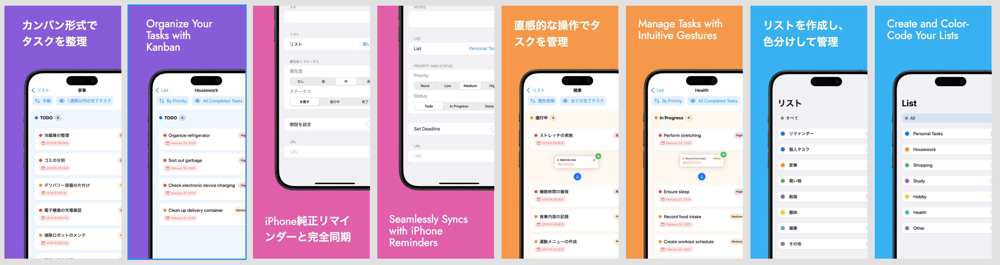
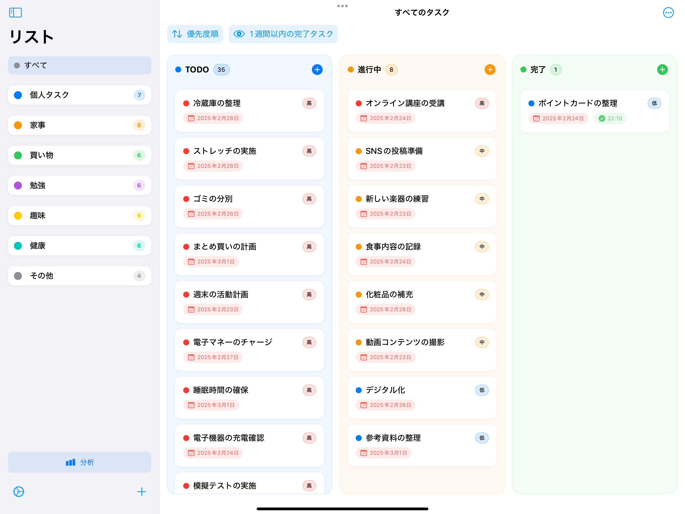

iPhone・iPad・Macの標準リマインダーを
カンバンボードで管理するタスク管理アプリ

Reminqは、iPhone・iPad・Macの標準リマインダーをカンバンボード形式で管理できるタスク管理アプリです。リマインダーのリストをそのままボードとして表示し、ドラッグ＆ドロップでタスクの状態を切り替えられます。
「Reminq」という名前は「Reminders」と独自性を表す「q」を組み合わせた造語で、iOS標準のリマインダーを再発明し、もっと直感的で楽しい使い心地に変えるという思いを込めています。
会議の準備、資料作成、締め切り管理、複数プロジェクトの並行進行など、リスト表示だけでは把握しづらいタスクも、カンバンボードなら「TODO」「進行中」「完了」を一目で見渡せます。データはすべて端末内のリマインダーに保存され、iCloud経由でデバイス間と同期します。

リマインダーのリストをカンバンボード形式で表示。「TODO」「進行中」「完了」の3段階で進捗を可視化します。
iPhone・iPad・Macの標準リマインダーアプリとEventKit経由で自動同期。データは端末に安全に保存されます。
タスクの進行状況をドラッグ＆ドロップで簡単に変更。スムーズな操作性で、ストレスフリーな管理を実現します。
大きなタスクをAIが適切なサイズに分解。ご自身のOpenAI APIキーを設定するとご利用いただけます。
手書きメモや紙の付箋を撮影してデジタルタスクに変換。アナログとデジタルの境界を取り払います。
週・月単位のグラフ表示で活動量を可視化。完了傾向を振り返り、次の計画に活かせます。
ホーム画面のウィジェットからタスクの進捗をすばやく確認。アプリを開かずに今日やることを一望できます。
登録したリマインダーをワンタップで GitHub Issue に変換。開発タスクをそのまま課題管理に持ち込めます。
データは端末内のリマインダーに保存され、外部サーバーへ送信されません（AI機能利用時を除く）。
テキストや画像を分析してタスクリストを自動生成する機能を準備中です。
ボードの色や付箋スタイルを自由にカスタマイズできるテーマ機能を予定しています。
関連するタスクを紐づけて並べ替え、プロジェクト全体の依存関係を可視化する機能を検討中です。